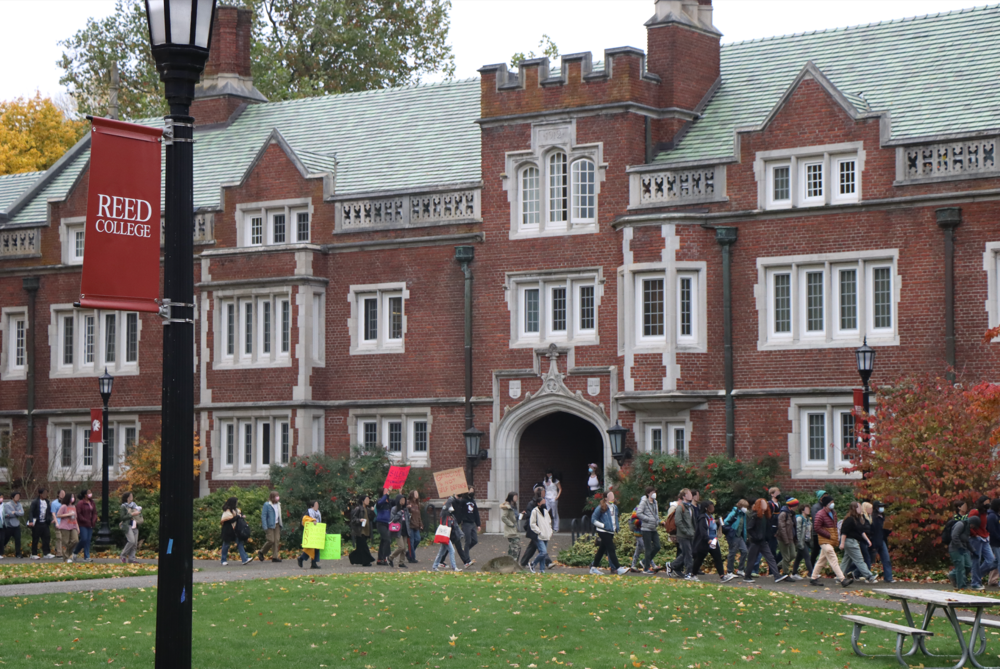

News Writing / Web Version / Print Version
Reed College Protest Ends in Four Student Arrests, President Bilger Calls For "Mutual Respect For Our Shared Humanity"
November 17, 2023 | reedquest.org/reed-college-student-arrests-intifada-november-9-protest

Thursday, November 9: Students march behind a banner reading “Intifada Everywhere” on Reed College’s campus.
At 1:30pm on Thursday, November 9, approximately a hundred Reed College students, led by the Reed Students for Justice in Palestine (SJP), walked out of class to demand “an immediate ceasefire, an end to U.S. military aid to Israel, [and] an end to the siege on Gaza.” Students marched behind a banner reading “Intifada Everywhere,” while chanting slogans including, “Mobilize the intifada,” “Palestine is our demand / no peace on stolen land,” “When Palestine is under attack / What do we do? Stand up, fight back,” “Hey hey, ho ho / Israel Has Got to Go,” and “There is only one solution / intifada revolution!” The Reed SJP had posted these chants to their Instagram prior to the walkout, and the complete list is featured on pages four and five. The Quest also recorded an audio clip of students and other protesters chanting “globalize the intifada.”
According to Merriam-Webster, “intifada” is an Arabic word meaning “uprising,” or “rebellion.” Encyclopedia Britannica explains that historical intifadas in the region include “either of two popular uprisings of Palestinians in the West Bank and Gaza Strip aimed at ending Israel’s occupation of those territories and creating an independent Palestinian state. The first intifada began in December 1987 and ended in September 1993 with the signing of the first Oslo Accords, which provided a framework for peace negotiations between Israel and the Palestinians. The second intifada, sometimes called the Al-Aqṣā intifada, began in September 2000. Although no single event signaled its end, most analysts agree that it had run its course by late 2005. The two uprisings resulted in the death of more than 5,000 Palestinians and some 1,400 Israelis.”
Student protesters march in front of Reed’s Old Dorm Block on Thursday.
While SJP organizers spoke in front of Vollum Hall, a protester displayed the flag of the Popular Front for the Liberation of Palestine (PFLP). The Quest has not been able to independently confirm if this individual was a student. The PFLP, which has been designated as a terrorist organization by the U.S. State Department, demands the destruction of Israel and has carried out a number of assassinations, airline hijackings, and suicide bombings.
A man in black lifts the flag of the Popular Front for the Liberation of Palestine – a designated terrorist organization – outside the Portland World Trade Center. The same flag was raised on Reed’s campus.
Before moving downtown, organizers acknowledged there was a legal risk to protesters. They said it was unlikely anyone would be arrested, but told students to “go limp” if they were. They asked that any “students here on visas or at legal risk of any capacity do not enter the building,” referring to the Portland World Trade Center. A number of organizers said they could offer first aid supplies, hand warmers, masks, earplugs, snacks, and water. “Reedies take care of Reedies,” one said.
The protesters traveled by bus to the Portland World Trade Center, which contains the private office of United States Senator Jeff Merkley, a member of the Foreign Affairs Committee. The protesters’ stated aim was to lobby for Merkley’s support for a ceasefire. The Quest could not independently confirm whether the senator was present in the building.
Reed College students march down 28th Avenue carrying signs.
Once the students reached the World Trade Center at around 2:45pm, they were joined by approximately 150 other protesters not associated with the college. Four masked men wearing all black, one of whom appeared to be armed with a riot baton, surrounded the block.
Protest speakers, some of whom were Reed students, addressed the crowd with bullhorns in what they described as “a teach-in to learn about the movement for a free Palestine, why we need to demand a ceasefire immediately, and why we need to end all U.S. aid to Israel and fight for a free Palestine.” Speakers criticized U.S. aid to Israel, the “failing proxy war” in Ukraine, the Continental Army of the American Revolutionary War, high rent in Portland, and the Lockheed Martin and Boeing corporations.
Protesters, including members of the Reed Students for Justice in Palestine, gather outside the Portland World Trade Center.
Shortly after 3:00pm, a sizable group broke from the main crowd of protesters and illegally entered the skywalk in front of the World Trade Center. Several pounded on the glass, and at least one spray-painted slogans onto the walls.
One Reed student, who spoke to the Quest on the condition of anonymity because they had broken the law, entered the building with other protesters. They said the group intended to “confront the senator.” The student continued, “Some of the protesters started trying to pull the doors open … people started throwing themselves at the doors … there was a battering ram involved, it wasn’t a real battering ram, it was like some chairs or something.” The Quest has independently confirmed that Reed students used a makeshift battering ram in an attempt to breach the locked doors of the World Trade Center. However, the attempt was unsuccessful, and the anonymous student left the skywalk after they “started having a panic attack.”
Protesters, some of whom were Reed students, illegally entered the skywalk outside of the Portland World Trade Center.
Reporters observed that at least nineteen officers from the Portland Police Department had arrived on the scene by 3:30pm. At least two wore riot gear, and five gathered on bicycles equipped with devices capable of forming barricades. A fire truck and an ambulance circled the block but did not park.
At 3:38pm, the police declared the gathering unlawful and threatened to arrest any protesters who remained in the skywalk. Reporters for the Quest did not observe any protesters leaving the area around the World Trade Center, nor did they observe any descending from the skywalk. However, the Quest was later able to independently verify at least one did so.
A significant number remained above, however, and, after a delay, officers entered the skywalk. A short time later, they reemerged, having arrested at least two demonstrators whom the Quest visually identified as Reed students. The Oregonian later published the names of all six protesters arrested. The Quest has confirmed from the campus directory that four of those arrested were current Reed students, and the SJP later said on its Instagram that all the arrested students had been released by the night of the 9th.
Members of the Portland Police Department gathered across the street from the protest.
At 4:30pm, once the arrests had concluded, most of the police departed the scene, even though almost all of the protesters remained inside the skywalk. About a dozen protesters who were not originally inside the skywalk entered it after they saw police leave.
Protesters then resumed the chant of “Intifada intifada / long live the intifada,” before shifting to a new chant: “There is only one solution / intifada revolution.”
Protesters chant “There is only one solution / intifada revolution” outside the Portland World Trade Center.
A few minutes later, a speaker said the protest would continue until the end of the working day. Quest reporters intended to remain until the protest’s conclusion but were forced to leave after being chased from the scene by one of the four masked men surrounding the block.
The Reed SJP is a campus chapter of the National Students for Justice in Palestine (NSJP), which works to “[build] on the legacy & impact of the student movement in occupied Turtle Island (U.S. and Canada), … [and which] seeks to empower, unify, and support student organizers as they push forward demands for Palestinian liberation & self-determination on their campuses.”
Brandeis University and Columbia University have both suspended on-campus chapters of the SJP following disruptive protests. A spokesperson for Brandeis said, “SJP has called on its chapters to engage in conduct that supports Hamas in its call for the elimination of the only Jewish state in the world and its people.” The NSJP had previously made statements regarding the October 7 Hamas attack on Israel, including in a “Day of Resistance Toolkit” which was shared with its campus chapters in preparation for a previous nationally coordinated protest on October 12, 2023. That handbook described the October 7th attacks as “a surprise operation against the Zionist enemy which disrupted the very foundation of Zionist settler society.” The handbook continued, “Today, we witness a historic win for the Palestinian resistance: across land, air, and sea, our people have broken down the artificial barriers of the Zionist entity, taking with it the facade of an impenetrable settler colony and reminding each of us that total return and liberation to Palestine is near. As the Palestinian student movement, we have an unshakable responsibility to join the call for mass mobilization. National liberation is near— glory to our resistance, to our martyrs, and to our steadfast people.”
At 8pm on November 9, the Quest issued a general comment deadline of noon on November 10 to both the college administration and the Reed SJP. A representative of the college responded on Friday afternoon, saying, “The safety of our Reed campus community is the college’s primary concern at any campus gathering. College leadership is aware of what took place at Thursday’s rally and will continue discussions regarding possible next steps.”
The Reed SJP released an Instagram statement on the night of the 9th saying “It is irresponsible of the Quest [sic] to publish an initial headline without perspectives from SJP organizers, which would further contextualize the events of the 9th and include additional information Quest [sic] reporters were unable to observe.” The Reed SJP continued, “Currently, events are unfolding rapidly and we are solely focused on supporting our classmates who were detained. … We plan to release a detailed statement to the Quest [sic] (as well as the general public) on all relevant information in the coming days, but our primary concern is and always will be for our fellow students.” As of the Quest’s print deadline on November 15, the paper has received no further statements from the Reed SJP.
The Thursday walkout took place on the 85th anniversary of the first Nazi pogrom, Kristallnacht — the Night of Broken Glass — which saw synagogues, homes, and businesses destroyed and hundreds of German Jews slaughtered during the night of November 9 and the morning of November 10, 1938. When the Quest became aware of the date’s significance late on Thursday night, reporters reached out to the SJP, writing “The Quest has just been made aware that today’s walkout took place on the 85th anniversary of Kristallnacht [sic], the first Nazi pogrom against Jews in 1938. Was the Reed SJP aware of this history prior to conducting the walkout? Was the date of November 9th set by the national SJP?” (A screenshot of this conversation is available here.)
On Friday morning, the organization responded: “We were fully aware of the anniversary of Kristallnacht [sic], though the event was not planned around this anniversary. Rather, the event date was set by a coalition of various national organizations to avoid falling on a federal holiday to ensure our demands were heard by our representatives.” The Quest has been able to independently verify that the date of November 9 was announced by an international organization called Shut It Down for Palestine, which describes itself as a coalition between the Palestinian Youth Movement, the National Students for Justice in Palestine, the Answer Coalition, The People’s Forum, and the International Peoples’ Assembly. “That being said,” the Reed SJP continued, “remembering the Holocaust is a necessary part of our movement against the genocide of Palestinians. Antisemitic beliefs have no place in our movement, and we condemn all antisemitic actions, past, present, and future. Furthermore, Reed SJP, at the request of its Jewish members, would like to remind the Quest that the weaponization of Jewish trauma to suppress protests against genocide is not only blatant hypocrisy but also a form of antisemitism in and of itself. Accusing critics of the Israeli government of being antisemitic suggests that all Jews are responsible for the actions of said government, rendering the Jewish people a monolith and creating potential for scapegoating. Indeed, this weaponization of Jewish history exploits Jews and their suffering for the ideological ends of the imperialist Israeli government. Our message of liberation extends to all oppressed people, including Jewish people. This rally was in alliance with nearly 100 other events by similar organizations across the country on November 9th. The act of walking out and rallying in support of Palestine has absolutely no relation to antisemitism, and needless to say, we denounce antisemitism in all its forms. The enemies of Palestine are Zionism, colonialism, and occupation– not Jewish people. From the River to the Sea, Palestine will be free.”
The Quest had already reached out to the SJP for comment twice that night, first in person, then via text. When reporters knocked on the door of an in-progress SJP meeting, those inside opened the door but closed it again without speaking after the reporters identified themselves.
On Monday, November 13, Reed President Audrey Bilger issued a statement in response to Thursday’s events. She wrote, “Protesters at the rally on campus chanted certain slogans that many perceive as calls to violence. It is important to recognize the impact of such language. Reed College does not tolerate speech that advocates for violence. We are dedicated to creating a campus environment where all of our students feel welcome and safe. The rally was held on the 85th anniversary of Kristallnacht, a night of pogroms that targeted Jews and served as a precursor to the Holocaust. Known or unknown, this timing is a threatening provocation hearkening back to the murder of Jewish people.”
President Bilger continued, “While the intent of those in attendance may not have been to advocate for violence, some in our community experienced it as such, and it is important we recognize impact when harm is caused. We take seriously the fears that members of our community felt after hearing the language and seeing the signage at the gathering. … Our mission includes the necessity to understand multiple perspectives and to seek out different views. In the midst of the urgent passions surrounding the conflict in Gaza and Israel, we are struggling to find understanding. It is vital that we remember our shared purpose at Reed even as we work for the change we value in the world. As a college, we reject antisemitism and Islamophobia both on campus and in the world more broadly. … We can have differences of opinion, strongly held beliefs, and passionate political stances, but we cannot cross into the realm of advocating for violence. My fervent hope is—and our educational mission demands—that we continue to find ways to talk across difference by approaching each other with empathy, the desire to understand rather than convince, and a mutual respect for our shared humanity.” (This statement has been edited for brevity; the full text is available here.)
At 10:00am on Tuesday, November 14, approximately 20 members of the Reed SJP attended President Bilger’s open office hours and presented her with a written and verbal statement, according to the organization’s Instagram account. The written statement included the words, “We [Reed SJP] find your implication that our language and signage was in some way hate speech, a call to violence, or antisemitic deeply problematic. There is nothing hateful about calling for a ceasefire in Gaza and advocating for a free Palestine.”
The organization continued, “‘Intifada’ now joins a long list of Arabic words and phrases, including ‘Allahu akbar’ and ‘jihad’, which the Western media and state has very purposefully attempted to associate with terrorism in order to support Islamaphobic ideologies … Misconstruing terms and expressions that are used by Palestinians to spread hope, such as ‘From the River to the Sea’ and ‘Intifada everywhere’, as antisemitic or promoting terrorism only serves to divert attention from the atrocities being committed in Gaza and manufacture consent for the genocide of Palestinians backed by the US military-industrial complex … And to be clear – we strongly condemn antisemitism in all its forms … We recognize and are deeply concerned about the rise in antisemitism both on campus and in the broader world, and have Jewish members who are in the process of organizing on-campus actions for Jews who may feel unsafe.”
The organization further asked that “the Reed administration organize two separate, unbiased, transparent, and collaborative committees comprised of Reed community members, including students, staff, and faculty; one committee would investigate and address the rising incidents of antisemitic vandalism on campus, and the other would investigate and address the ways in which Reed’s endowment could be contributing to the genocide in Palestine…we thank you for your time, and ask that you engage with and seriously consider the statement and requests we have made today, just as we have engaged with and considered yours. We are not terrorists. We are not bigots. We are Reedies, and we are committed to Reed’s principles of critical thought, mutual respect, and independence of inquiry and expression.” (This statement has been edited for brevity. The full text can be found here.)
According to the organization’s Instagram account, in addition to their formal statement, some Reed SJP members in attendance also asked that “President Bilger and Reed College issue an apology for the portrayal of Reed SJP in the email sent on November 13th,” that “President Bilger and Reed College, rather than condemning students who were arrested while protesting, condemn the ongoing genocide occurring in Gaza,” and that, “Reed College ensure the safety of students on campus who have been doxxed by far-right social media personalities.” According to the Reed SJP, President Bilger verbally acknowledged that her statement “has reflected badly on SJP.” The Quest has been unable to independently confirm President Bilger’s words.
On November 15, 35 of the college’s 162 faculty signed a letter to President Bilger criticizing her statement on the Thursday walkout, a copy of which was obtained by the Quest. “Our most basic shared value as a college is that we abide by the principles of honor in our interactions with each other and our community,” the undersigned faculty wrote. “As the Community Constitution affirms, honor is built on trust. But trust is not possible when the President of the college implies that students calling for an end to violence are perpetuating hate speech; when the President of the college has vilified our community members involved in the walkout on campus; when the four Reed students who were arrested last week are singled out for intimidation without regard for their right to free speech or due process … We also question the neutrality and validity of labeling students’ chants for freedom as ‘hate speech’, and for drawing any comparison between their protests for a ceasefire and the heinous acts of the Kristallnacht.” The faculty continued, “We call on you to repair the harm caused by your email and restore trust that the college will protect our most basic rights and share in our communal commitment to our principles of honor.” (This statement has been edited for brevity; the full text is available here.)
The Reed SJP has announced plans to hold a Rally and Vigil for Palestine at 4pm on November 17 on the campus quad, organized in conjunction with Shut It Down for Palestine.

{kind=link}